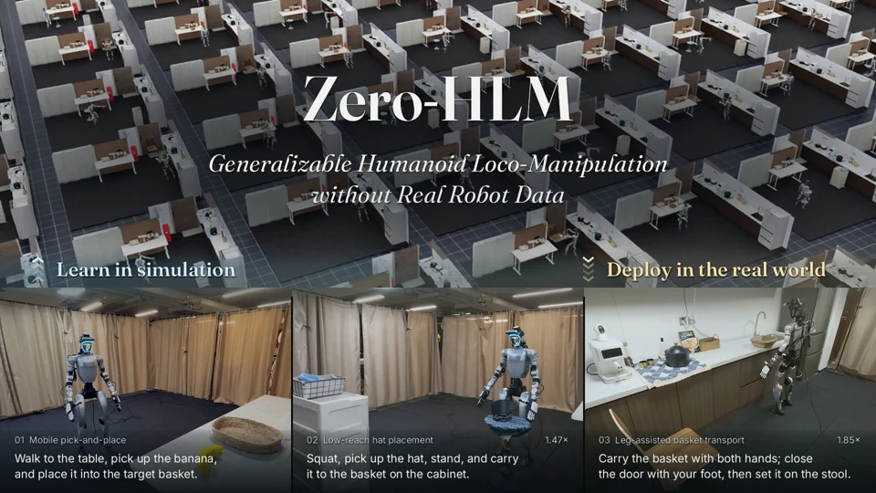
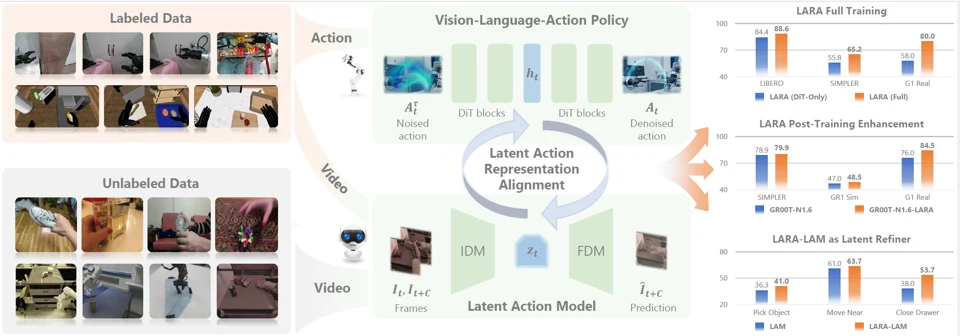
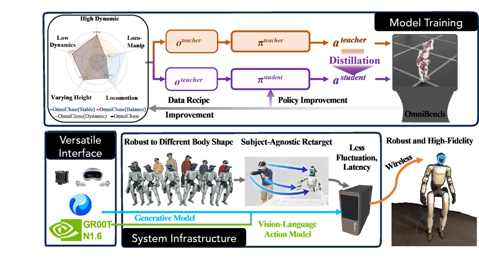
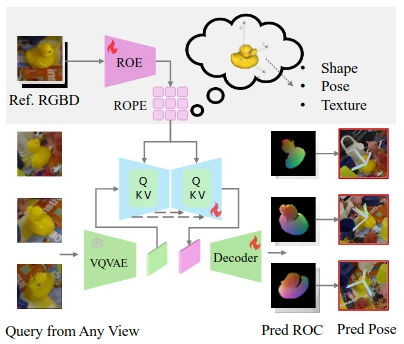
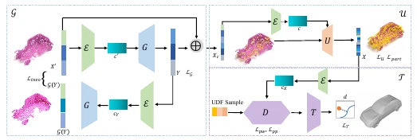
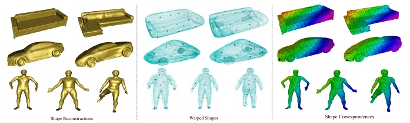
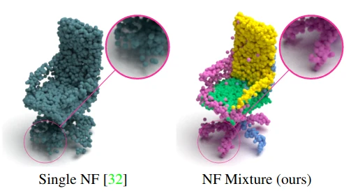

We will present our work Zero-HLM in the CoRL 2026 Late Breaking Results Presentation.
ROBOTICS & 3D VISION
Mengya Liu
I’m a researcher at the Beijing Institute for General Artificial Intelligence (BIGAI). My research focuses on vision-language-action (VLA) and world-action (WAM) models for humanoid robots.
I received my PhD from ETH Zurich in the Computer Vision Lab, supervised by Prof. Luc Van Gool and Dr. Federico Tombari. Before that, I earned my master’s degree at Northwestern Polytechnical University. During my PhD, I worked on 3D reconstruction, generation, and 6D pose estimation.
PhD · ETH Zurich
News
A few recent updatesDelta-0 (Δ₀): A New Chapter in Humanoid Intelligence Contributor · Blog
Selected Publications
* Equal contribution
Project page
Project page
Project page
Paper page
Paper page
Paper page
Paper page